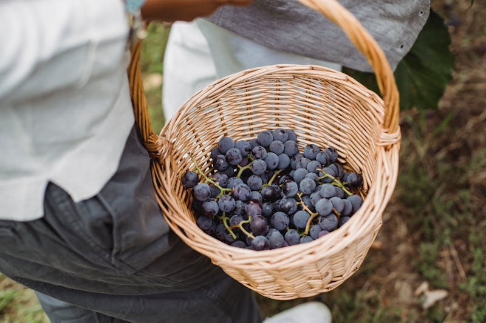
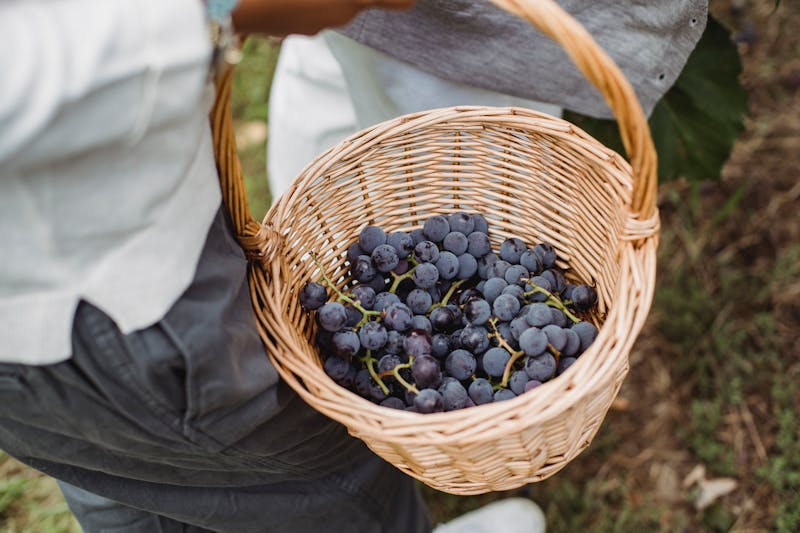

Do you know that a quarter of agricultural products go to waste every year?
Yes what you just read is true, in fact even more and more sustainable agricultural products are being destroyed annually due to government policy, hygiene or quality regulations.
Quality Regulations
When i mentioned quality regulations, i mean supermarkets and other agencies that buy products directly from us only pick the very best and leave the rest to be destroyed.
There is little or almost nothing we can do about this ourselves as farmers because the situation is beyond what we can handle.
How we plan to help
Together with my colleagues in The Hague South Holland, we have decided to curb the waste as much as possible by selling products that get rejected by supermarkets directly to individuals who are interested for cheaper price.
With so much quality products that can be used, for a very good price we hope to be able to make people happy and also reduce waste while doing so.
For this reason we come together as a group to create a space where we can make this products easily accessible to the general public and help people save money.
How to reach us
We are located in Laakkade 156 The Hague. We currently deliver around The Hague and Delft but in the coming months we hope to expand to other regions and keep people fed while reducing waste at the same time.
Want to know more about us? Contact us for More information.